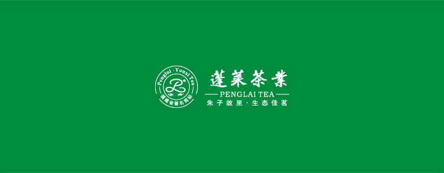
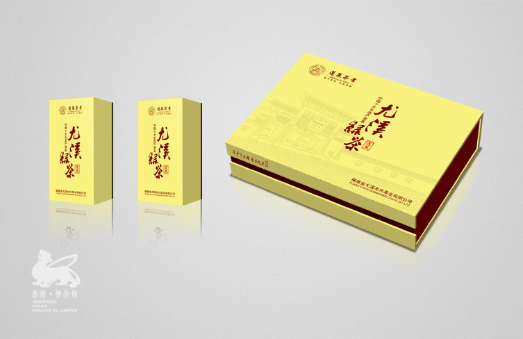
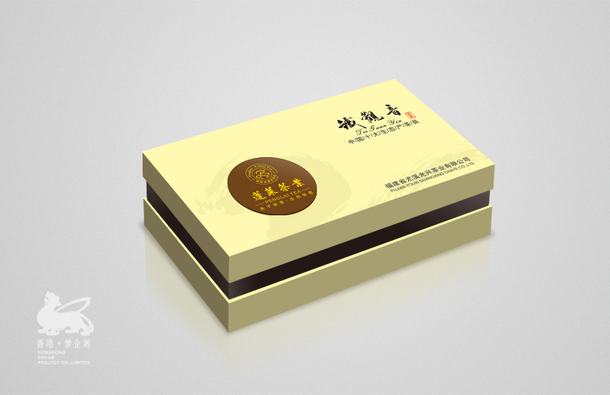
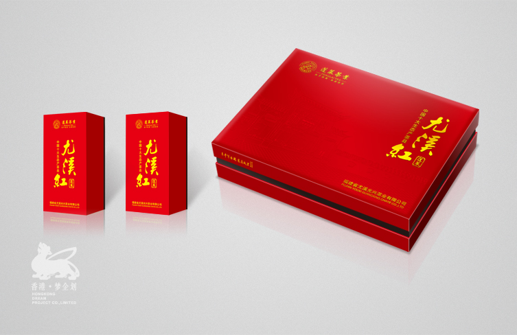
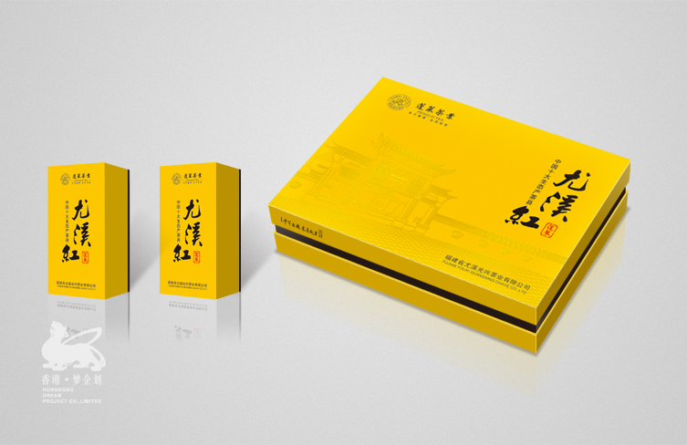

公司背景
福建省光兴茶业有限公司创办于2000年，致力于茶行业发展。2008年11月被三明市人民政府授予市级农业产业化龙头企业称号，近年在行业中
发展越来越快，在全国乃至全世界中盛名远扬。在包装上一直是他们薄弱的地方，一个偶然经过同行的介绍结识了我司，我司在包装上的一些
见解与其产生共鸣，2012年正式在包装上达成战略性合作。
产品包装规划设计
光兴茶业有限公司有自己的品牌文化VI，为了更深的了解并且在包装的开发上与其文化产生共鸣，我们简单的梳理其核心价值与文化点，抓住
“尤溪”“生态”作为主要的核心开发出诸多销往全国各地的茶礼装。
在产品的规划开发上，我们更侧重“生态”所带来的自然感，让每一个消费者带走的不仅仅是商品还有一份健康的生活理念。
服务内容
1、品牌文化VI系统梳理
2、品牌特点及市场定位梳理
3、产品及包装设计及营销开发
4、市场及消费人群分析
5、CRM老顾客维护系统开发
    